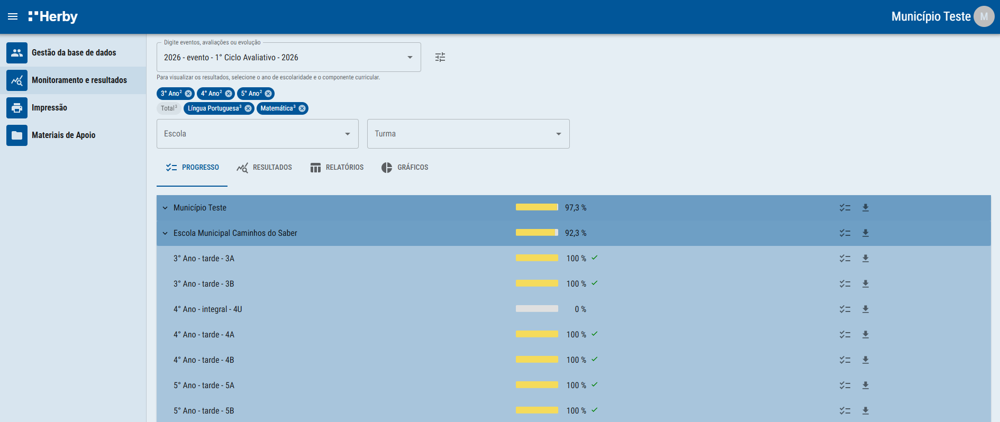

Como cada responsável acessa os dados das suas escolas, turmas e estudantes.
Cada responsável receberá um link de acesso aos dados de suas escolas, turmas e estudantes. Não é necessário cadastro das equipes nem login e senha para acessar à plataforma.
